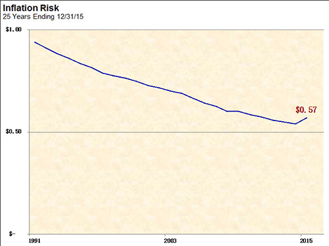

To fully comprehend inflation risk, it is necessary to understand what inflation is and how it affects the purchasing power of money. Simply stated, inflation is the rate at which the price of goods and services increases, thereby reducing the buying power of money.
In an inflationary environment, investing is like walking up an escalator that's going down. Climbing (or investing) increases the amount of money one can have, while inflation constantly reduces the value or the purchasing power of that money.

Investors often fail to recognize the risk associated with inflation. Two paths that make them victims of inflation are:
-
Do nothing - This effectively allows inflation to nibble away at the purchasing power of their money. While they might not experience “losses” in the market price of their investments, they will have reduction in the purchasing power of their money. (Keep in mind what your grandfather said to you regarding what a movie and bag of popcorn used to cost in his day.)
-
Invest too conservatively - Again, while conservative investing can be appropriate, one needs to make sure to understand the implications. If returns on investment are not substantial, inflation and capital gains taxes can consume much, if not all, of their purchasing power.
The graphic on this page illustrates the magnitude of inflation risk. For the last 25 years ending in December 2015, the purchasing power of one dollar has declined to just fifty-seven cents. Therefore, the total return of an investment only tells part of the story; it must be measured relative to the inflation that occurred during that period of time, if the true performance is to be observed.